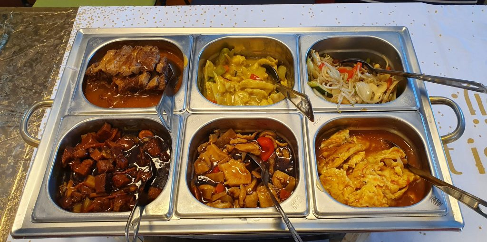
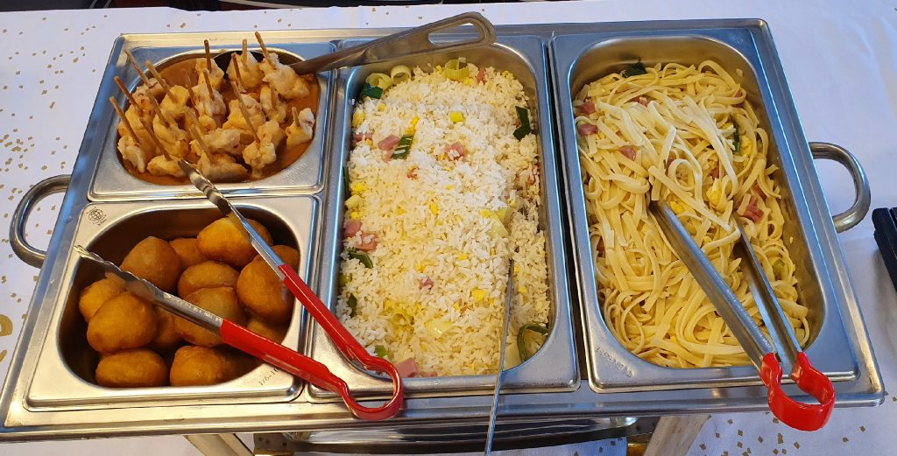
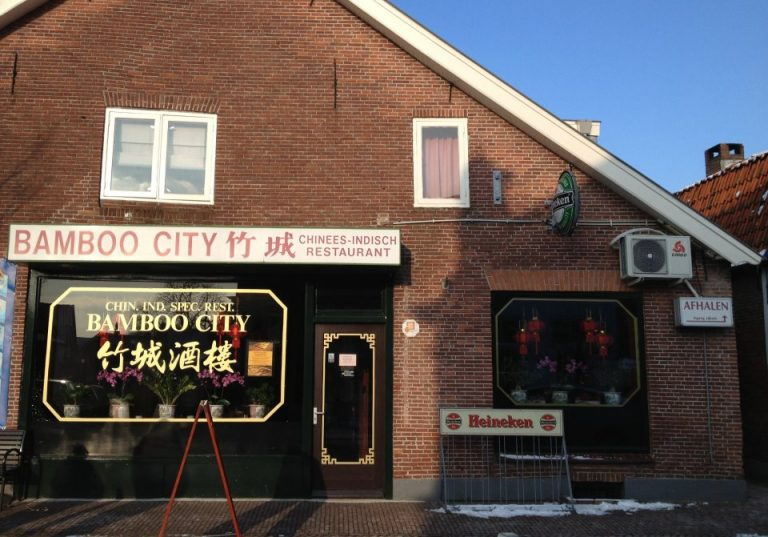

Menu A
€ 19,90- Babi pangang
- Foe yong hai
- Tsingtao loempia's (5 st.)
- Nasi, bami of witte rijst

Chinees-Indisch afhalen en catering in Amerongen
Nasi, bami, Peking eend, saté en complete rijsttafels: bestel online of bel ons, en haal je eten warm op aan de Overstraat.
Dinsdag t/m zondag open van 16:00 tot 21:00 uur
Maandag gesloten. Op feestdagen zijn we gewoon open.
Sinds 1 januari 2024 kun je bij ons niet meer dineren. Afhalen en catering gaan gewoon door.
Een vaste combinatie voor een vaste prijs. Bestel op naam of nummer, online of telefonisch.
Alle hoofdgerechten zijn inclusief witte rijst. Alle prijzen zijn inclusief btw.
Liever de lijst op papier? Download de afhaallijst (pdf)
Voor twee of vier personen, met witte rijst. Handig als je met een paar mensen wilt eten zonder te hoeven kiezen.

Tomatensoep, gebakken bananen, ajam pangang, babi pangang, foe yong hai, gado gado, saté en kroepoek
Pangsit goreng, gebakken grote garnalen, koe loe kai, babi pangang, foe yong hai, kipfilet in kerriesaus en kroepoek
Pangsit goreng, gebakken grote garnalen, koe loe kai, babi pangang, foe yong hai, kipfilet in kerriesaus, kroepoek en kipfilet in Bali-saus (pikant)
Wan tan soep, kroepoek, gebakken grote garnalen, garnalen in Gon Bao-saus, babi pangang en ossenhaas in zwarte sojabonensaus
Wan tan soep, kroepoek, gebakken grote garnalen, garnalen in Gon Bao-saus, ossenhaas in zwarte sojabonensaus, babi pangang en Peking eend in Bali-saus (pikant)
Ideaal voor bedrijfs-, familie- of verjaardagsfeesten. Catering vanaf 20 personen, inclusief borden en bestek. Reserveren is vereist. Heb je specifieke wensen, dan maken we graag een voorstel op maat.



| Maandag | gesloten |
|---|---|
| Dinsdag | 16:00 – 21:00 |
| Woensdag | 16:00 – 21:00 |
| Donderdag | 16:00 – 21:00 |
| Vrijdag | 16:00 – 21:00 |
| Zaterdag | 16:00 – 21:00 |
| Zondag | 16:00 – 21:00 |
Overstraat 35
3958 BS Amerongen